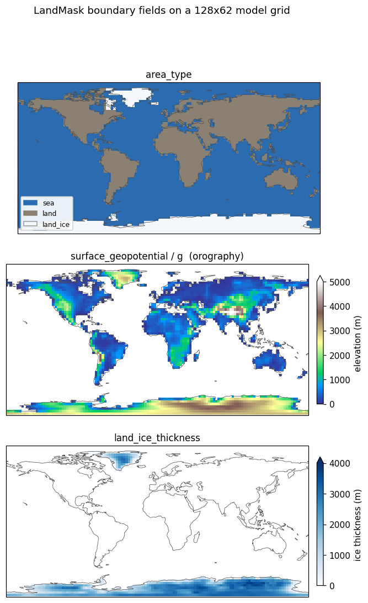

LandMask
Introduction
LandMask is a DiagnosticComponent that stamps a present-day Earth land/sea/land-ice geography onto the model grid. Its primary output is area_type, which the surface components (SlabSurface, SeaIce, LandIce, BucketHydrology, SecondBEST, DataOcean) read to decide, per column, which surface physics applies.
By default it also loads the static topographic boundary forcing tied to that geography — surface_geopotential (the orography read by the GFS dynamical core) and land_ice_thickness (the ice-sheet state read by SeaIce/LandIce) — bilinearly interpolated onto the model grid and re-zeroed over ocean using the area_type from the same call. This keeps the categorical geography and the continuous fields mutually consistent, and lets one component own the whole land/sea/ice/orography boundary specification. Disable it with load_topography=False if you want only area_type (for example, to supply your own orography).
Folding the topographic forcing into LandMask is a pragmatic separation-of-concerns compromise: surface_geopotential and land_ice_thickness are static boundary conditions defined on the same geography as area_type, so it is convenient for one component to set all of them at setup. See Topography for the data provenance.
It exists because the surface components are area-type aware: each one owns a subset of columns and passes the rest through unchanged. Without a component to populate area_type, every column defaults to "sea" (the registered default in get_default_state). LandMask gives you a realistic coastline at arbitrary model resolution without shipping a mask for each grid.

LandMask on a 128×62 Gaussian model grid: the area_type geography, the surface_geopotential orography read by the dynamical core, and the land_ice_thickness ice sheets. The orography is flat and the ice sheets absent exactly where area_type is sea.*LandMask sets only the static geography — sea, land, and land_ice. It does not set sea_ice, which is dynamic and owned by SeaIce. Running SeaIce will overwrite the area_type of columns where sea ice forms; running LandMask again would revert them, so apply LandMask once at setup rather than every timestep.
How the mask is applied
The component holds a source raster — a categorical field area_type_code(lat, lon) with integer codes — and maps it onto the model grid by nearest-neighbour lookup. For every model column it finds the source cell whose latitude and longitude are closest, and copies that cell’s category.
The index weights are computed once, on the first call, and cached, so repeated calls on a fixed grid are cheap:
lat_idx = np.abs(src_lat[None, :] - model_lat[:, None]).argmin(axis=1)
lon_idx = np.abs(src_lon[None, :] - model_lon[:, None]).argmin(axis=1)Model longitudes are wrapped into [0, 360) with np.mod(lon, 360) before the lookup, so a grid using either [-180, 180) or [0, 360) conventions resolves correctly against the bundled 0–360 source.
Because the lookup is nearest-neighbour rather than interpolation, the output is always one of the valid category strings — there are no fractional or blended cells, and the categorical nature of area_type is preserved at any target resolution.
Category codes
The source raster stores integer codes, mapped to the byte-string categories climt uses for area_type:
| Code | area_type |
Meaning |
|---|---|---|
| 0 | b"sea" |
ocean |
| 1 | b"land" |
ice-free land |
| 2 | b"land_ice" |
permanent land ice (Antarctica, Greenland) |
With include_land_ice=False, code 2 cells are emitted as b"land" instead, so land-ice columns are treated as ordinary land (useful when you are not running an ice component and want land-surface physics everywhere on land).
The bundled Earth mask
The default source is a 2° raster bundled with climt at climt/_data/land_mask/earth_landmask_2deg.nc. It is generated at build time from regionmask’s Natural Earth land polygons by scripts/build_land_mask.py, which rasterises land vs. sea and then tags Antarctica and Greenland as land_ice. regionmask is a build-time dependency only — it is not needed to use LandMask, only to regenerate the bundled file.
The netCDF stores coordinates lat (degrees north, ascending) and lon (degrees east, 0–360) and an integer variable area_type_code with CF flag_values = [0, 1, 2] / flag_meanings = "sea land land_ice".
Supplying your own mask
Pass mask_dataset to override the bundle — either a path to a netCDF or an already-open xarray.Dataset. It must expose the same structure: lat, lon, and an integer area_type_code using the code convention above. This is how you would drive a paleoclimate configuration, an idealised aquaplanet-with-a- continent, or a different-planet geography.
Constructor
climt.LandMask(mask_dataset=None, include_land_ice=True,
topography_dataset=None, load_topography=True)| Argument | Default | Description |
|---|---|---|
mask_dataset |
None |
Path to a netCDF, or an xarray.Dataset, providing area_type_code(lat, lon). None uses the bundled 2° Earth mask. |
include_land_ice |
True |
If False, land_ice (code 2) cells are emitted as land. |
load_topography |
True |
If True, also emit surface_geopotential and land_ice_thickness. Set False for area_type only. |
topography_dataset |
None |
Path or xarray.Dataset providing surface_geopotential(lat, lon) and land_ice_thickness(lat, lon). None uses the bundled 2° ETOPO-derived file. |
State
Inputs
| Quantity | Dims | Units |
|---|---|---|
latitude |
[*] |
degrees_north |
longitude |
[*] |
degrees_east |
Diagnostics (outputs)
| Quantity | Dims | Units | Notes |
|---|---|---|---|
area_type |
[*] |
dimensionless |
Byte strings b"sea" / b"land" / b"land_ice" (dtype S100). |
surface_geopotential |
[*] |
m^2 s^-2 |
load_topography=True only. Bilinear; non-negative; zero over sea. |
land_ice_thickness |
[*] |
m |
load_topography=True only. Bilinear; non-negative; zero over sea. |
Example
import climt
from climt import get_grid, get_default_state
mask = climt.LandMask()
state = get_default_state([mask], grid_state=get_grid(nx=128, ny=62, nz=30))
# Apply the geography once at setup.
state.update(mask(state))
area = state["area_type"].values.astype(str)
print(sorted(set(area.ravel()))) # ['land', 'land_ice', 'sea']To treat land ice as plain land:
mask = climt.LandMask(include_land_ice=False)To drive an idealised geography (northern hemisphere land, southern hemisphere ocean) from your own raster, build an xarray.Dataset with an integer area_type_code(lat, lon) and pass it as mask_dataset.
Bundled data source
The default geography at climt/_data/land_mask/earth_landmask_2deg.nc is a 2°×2° categorical raster (area_type_code: 0=sea, 1=land, 2=land_ice).
| Land/sea outline | Natural Earth v5.0.0 land_110 (110 m scale), via the regionmask package |
| Land-ice tagging | Antarctica (lat < −63°) and Greenland (58°–84° N, 285°–350° E) land cells re-tagged as land_ice |
| Grid | 2° cell centres, lat −89°…89° (ascending), lon 1°…359° (0–360) |
| Format | netCDF-3 classic (read here via xarray’s scipy engine) |
| Generator | scripts/build_land_mask.py (build-time only; needs regionmask) |
Natural Earth is public-domain. To use a different geography (higher resolution, palaeoclimate, or an idealised aquaplanet), pass your own area_type_code(lat, lon) raster as mask_dataset.
The topographic fields (surface_geopotential, land_ice_thickness) loaded by default come from a separate bundled file derived from ETOPO 2022 — see Topography for provenance, the download link, and the generator.
Source
- Component:
climt/_components/land_mask/component.py - Bundled mask generator:
scripts/build_land_mask.py - Bundled topography generator:
scripts/build_topography.py - Default state registration:
climt/_core/initialization.py